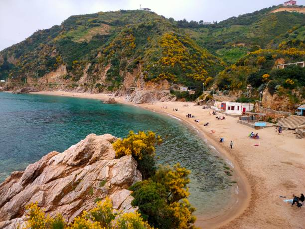

Gallery


Algeria is a large North African country known for its diverse landscapes, including the Mediterranean coast, the Tell Atlas Mountains, and the vast Sahara Desert. Officially the People's Democratic Republic of Algeria, its capital is Algiers, and the official languages are Arabic and Tamazight. The country's economy is significantly influenced by its oil and gas reserves, and it is a member of organizations like the United Nations and the African Union
Raï, Chaabi, and Kabyle music are the heartbeats of Algeria. Expressing stories of love, freedom, and identity.
Enjoy couscous, rechta, and chakhchoukha, meals filled with warmth, spice, and family tradition.
Explore the Roman ruins of Timgad, the Casbah of Algiers, and the Sahara’s ancient trade routes.
Want to know more about Algeria? Get in touch!
Send Email